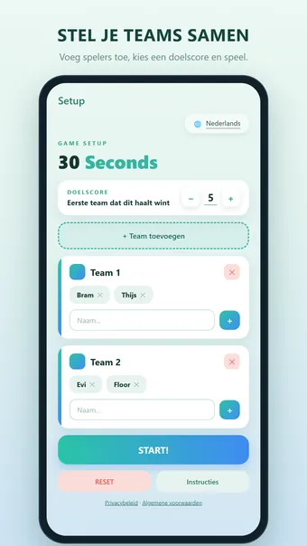
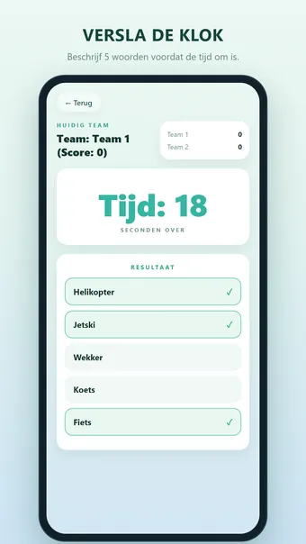
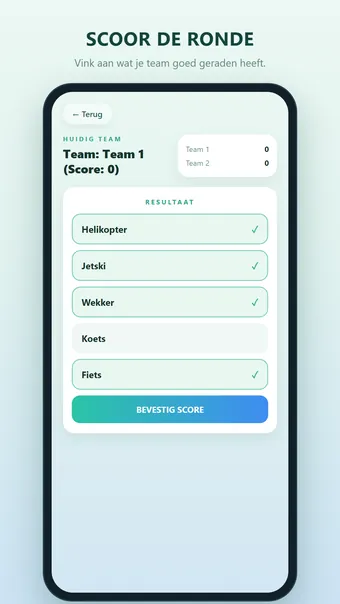
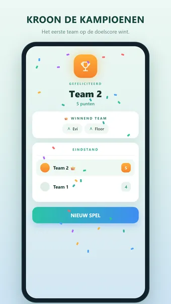

Over 30 Seconds
Speel 30 Seconds, het razendsnelle en hilarische woordraadspel dat elk samenzijn verandert in een spannende wedstrijd. Verzamel je vrienden, familie of collega's, kies de teams en maak je klaar om te lachen, te schreeuwen en de klok te verslaan.
Zo werkt het
Eén speler krijgt 5 geheime woorden en slechts 30 seconden om ze aan zijn team te omschrijven — zonder het woord zelf of een vertaling te noemen. Elk woord dat je team raadt is een punt waard. Het eerste team dat de doelscore haalt, wint!
Waarom je het leuk vindt
- Snel te leren, onmogelijk weg te leggen
- Perfect voor feestjes, roadtrips, familieavonden en ijsbrekers
- Geschikt voor 4 tot 20+ spelers
- Rondes duren maar 30 seconden — geen gewacht
- Een enorme ingebouwde woordenlijst, elke ronde opnieuw geschud
Speel op jouw manier
- Onbeperkt teams — voeg er zoveel toe als je wilt
- Instelbare doelscore: een snel potje tot 15 of een epische strijd tot 50
- Strak, modern ontwerp in rustige munttinten
- Ingebouwde uitleg zodat nieuwe spelers het in seconden snappen
9 talen inbegrepen
- Nederlands, Engels, Duits, Frans, Spaans, Portugees, Italiaans, Pools en Turks
- Elke taal heeft zijn eigen woordenlijst met duizenden woorden — geen vertalingen van één lijst
- Ook de hele interface is vertaald
- Wissel van taal direct op het instelscherm, zodat een gemengd gezelschap speelt in de taal die past
- Voeg je eigen woorden per taal toe
Tips
- Gebruik synoniemen, omschrijvingen en voorbeelden — nooit het woord zelf
- Sla een moeilijk woord over en ga door; snelheid wint van perfectie
- Wissel elke ronde wie omschrijft, zodat iedereen aan de beurt komt
Gratis te spelen. De app toont advertenties, die je met één optionele aankoop kunt verwijderen; een account is niet nodig.
Veelgestelde vragen
Is 30 Seconds gratis?
Ja. 30 Seconds is gratis te downloaden en te spelen. De app toont advertenties, die je met één optionele aankoop in de app kunt verwijderen.
Werkt 30 Seconds offline?
Ja. 30 Seconds werkt zonder internetverbinding, dus je speelt ook in het vliegtuig, in de trein of overal zonder wifi.
Heb ik een account nodig om 30 Seconds te spelen?
Nee. Je hoeft je niet te registreren of in te loggen: open de app en speel. Je spellen en instellingen blijven op je eigen toestel.
Hoe speel je 30 Seconds?
Eén speler krijgt 5 geheime woorden en slechts 30 seconden om ze aan zijn team te omschrijven — zonder het woord zelf of een vertaling te noemen. Elk woord dat je team raadt is een punt waard. Het eerste team dat de doelscore haalt, wint!
Waar kan ik 30 Seconds downloaden?
30 Seconds is voor Android-telefoons en -tablets te downloaden via Google Play. Gebruik de knop bovenaan deze pagina.
Meer spellen die je leuk vindt
Word Connect
Verbind letters tot woorden. Eindeloos puzzelen en elke dag een nieuwe puzzel.
Google PlayHartenjagen
Het klassieke kaartspel. Speel offline tegen slimme computertegenstanders.
Google PlayWoordzoeker
De klassieke woordzoeker. Oneindig veel puzzels, elke dag een nieuwe uitdaging.
Google PlayJuridisch
Hieronder vind je de juridische documenten die voor 30 Seconds gelden.
Contact
Vragen, feedback of een privacyverzoek? Mail naar joostmuijsenberg.dev@gmail.com.